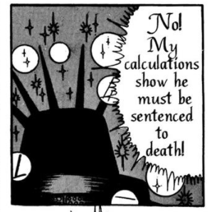

When a recruiter considers a stack of resumes, s/he sorts each application into two piles - perhaps labeled "interview" and "reject". When a bank manager considers a series of loan applications, s/he labels each application "approve" or "reject". Classification, the general process of sorting cases into piles, forms the backbone of social, financial, and medical systems that have massive impact on people's lives.
Note: All interactive examples in this essay are randomly generated models meant to illustrate inherent relationships and concepts in classification systems generally. None are meant to reflect on any exact real world population or dataset.
As we enter an age where data is frequently compared to powerhouse commodities like oil, many common classification tasks are being performed by complex computer systems instead of individuals. Some examples include:
As these systems grow larger and more influential, it has become a special point of interest to ensure not only a high level of overall performance but also fairness along gender, race, and other protected class lines.
How can we tell if a classification is unfair?
Perhaps even a highly accurate cancer-prognosis system mistakenly gives more aggressive prognoses to elderly patients than to young ones, or a hiring system offers more interviews to unqualified men than to women. In these cases the system's accuracy is significantly different for one group than another, and a hiring manager or doctor using one of these systems might interpret recommendations differently depending on the group membership of the person under consideration.
Note: One trivial way of balancing accuracy is to exactly interview all the qualified candidates and none of the unqualified ones (or vice versa). Since these algorithms will never be so perfect, most discussions of fairness ignore these "degenerate" cases.
You may have noticed that our measure of accuracy captures how often the algorithm decides to interview a qualified candidate, but ignores the times when someone who deserves an interview is rejected. If qualified men and women are interviewed at the same rate but many qualified women are rejected (more than the number of rejected, qualified men) then that system would still be unfair. After all, if you were a qualified woman it means you would then have a lower chance than an equally qualified man of getting an interview!
In order for an algorithm to be fair it must balance both the mistakes it makes in its positive labels (interviews) as well as its negative labels (rejections). You may find it difficult to perfectly balance both in these small-scale examples, but see how close you can get.
Note how difficult it can be to construct a good test condition for these labels. What does it mean for a candidate to be qualified, and how do you measure it? If you reject someone's loan application, how do you evaluate whether or not they would have been able to pay it back?
So, as long as classification systems make labeling mistakes for the different groups at roughly the same rate, there is nothing to worry about, right? But another notion of fairness starts to emerge if we consider labeling mistakes within classes instead of class mistakes within labels.
The terminology quickly becomes confusing, so let us return to a concrete example. Suppose a criminal recidivism system mistakenly labels blacks as high-risk more often than whites; say 10% of blacks who never go on to commit another crime are labeled as high risk whereas only 5% of whites who never commit another crime receive that same high risk label. This system is unfair in a distinctly different way; it punishes more blacks with an undeserved high-risk rating which could lead to harsher sentencing among other potential consequences.
Our earlier definition of fairness was concerned with ensuring the predictive power of the system was balanced in the two groups. In the criminal recidivism example, this means making sure that the "high risk" label is as accurate for whites as it is for blacks (and correspondingly, that the "low risk" label is accurate for both groups as well).
It is actually impossible to satisfy both of the main definitions of fairness we have considered so far without a perfect algorithm (or identical groups). It is possible to balance the label mistakes within classes, the class mistakes within labels, but not both at once.
In order to lower the false positive rate (the probability that an unqualified candidate is given an interview, or an non-recidivist is labeled "high risk"), fewer unqualified candidates could be given interviews. This increases the positive accuracy (the probability that an interviewed candidate is qualified) as well as the negative accuracy (the probability that an unqualified candidate is rejected). The amount that all these values change depend on the the overall base rate in the population (the ratio of X's to O's, or the ratio of qualified to unqualified candidates). The same is true of the false negative rate.
In other words, the error rates for each group depend on both the accuracy of the classification and the group's base rate. This implies then that if the error rates for both groups are the same, and the base rates are different, the accuracy must be imbalanced.
See for yourself below:
If you are interested in a more precise proof of this concept, I encourage you to check out some of the original papers on which this essay is based!
No matter how much juggling happens, all the fairness definitions cannot be satisfied without perfect prediction or identical groups.
Are all algorithmic classification systems, or even non-algorithmic classification systems for that matter, doomed to unfairness when the groups aren't identical?
The mathematics say that the answer is unequivocally yes, something that was not so obvious during the Propublica-Northpointe controversy of 2016. But what steps are there in 2020? There is nuance yet that algorithm builders, researchers, journalists, and policymakers can draw on to reduce the real world impacts of the unfairness present within these systems. Not all unfairnesses are equal after all; aside from imbalances in error rates or accuracies there are myriad other important criteria to consider when evaluating these systems. How does the system evaluate success? Is it designed to correct for errors? Is the impact of error rate imbalance greater or less than that of accuracy imbalance?
These questions aren't always easy to answer. But as we turn over the responsibilities of classification to ever more complex automated systems they become questions that deserve our hard consideration.
Osamu Tezuka's 1967 manga "Phoenix: A Tale Of The Future" depicts a human civilization whose every decision is subject to the will of the supercomputer Hallelujah.